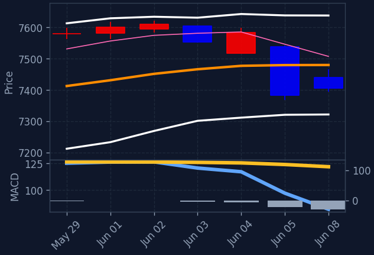
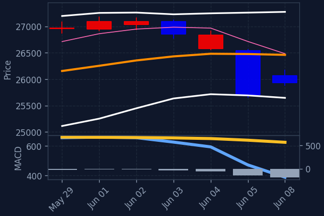
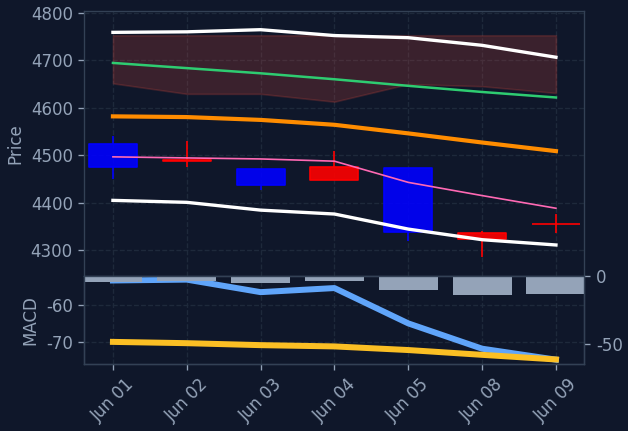
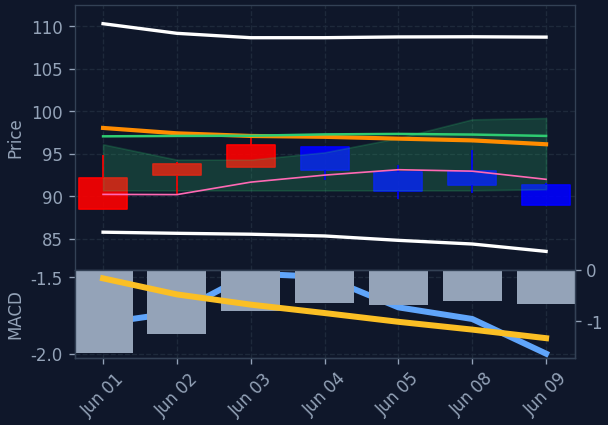

40 / 100 — 공포




🇰🇷 EWY(한국 MSCI ETF) $185.64 마감 +5.96% · 프리장 +4.05%
현재 미국 프리장 시장은 반도체 섹터의 강한 반등에 힘입어 전반적으로 상승세를 보이고 있습니다. 특히 필라델피아 반도체 지수와 관련 ETF의 급등이 시장 전반의 긍정적인 분위기를 주도하고 있으며, 이는 AI 관련주들의 회복 기대감과 연관된 것으로 해석됩니다. 다만, 다우 지수는 소폭 하락하며 일부 업종의 차별적인 움직임도 나타나고 있습니다.
직전 정규장 마감 후, 반도체 섹터의 회복 가능성에 대한 분석과 함께 필라델피아 반도체 지수의 급등이 프리장에서 주목받고 있습니다. 특히 S&P 500 편입 소식에 Marvell 주가가 급등했으며, Micron의 AI 관련 손실 만회 가능성 등 개별 반도체 기업에 대한 긍정적인 전망이 관련 ETF와 종목들의 상승을 견인하고 있습니다. 이러한 흐름은 기술/IT 섹터 전반으로도 긍정적인 영향을 미치고 있습니다.
프리장에서는 반도체 섹터가 압도적인 강세를 보이며 시장을 주도하고 있습니다. 필라델피아 반도체 지수가 5% 이상 급등했고, SOXL과 같은 반도체 3배 레버리지 ETF 역시 높은 상승률을 기록 중입니다. 이는 최근 AI 관련주들의 조정 이후 회복에 대한 기대감과 S&P 500 편입과 같은 개별 호재가 복합적으로 작용한 결과로 보입니다. 2차전지/리튬 섹터도 3% 가까이 상승하며 강세를 보이고 있으나, 반도체 섹터의 상승폭에는 미치지 못하고 있습니다. 헬스케어/바이오와 에너지 섹터는 약세를 나타내고 있습니다. 이러한 반도체 섹터의 강세는 한국 증시에서도 관련 종목들의 투자 심리에 긍정적인 영향을 줄 수 있습니다.
※ S&P500 대상 A/B/C/D 종합 시그널(거래대금순). 백테스트상 기계적 엣지는 약하며 매수 추천이 아닙니다. 판단·책임은 본인.
📅 결제일 6/2~6/8(5거래일) 기준 · 오늘 6/9 기준 약 1일 전 데이터 · T+2 결제 기준(실제 매매는 약 2거래일 전)
💸 한국인 순매수 일평균: +7,616억 (전주 +6,229억 대비 +22.3%) · 5일 총액 +38,078억
※ 예탁결제원(SEIBro) 최근 5거래일 한국인 순매수/순매도 결제금액(T+2) · 6/2~6/8 결제 기준(실제 매매는 약 2거래일 전). 자금이 어디로 유입·유출되는지 참고용.
📊 나스닥 선물 +0.38%
📊 S&P500 선물 +0.26%
현재 E(투매 바닥) 신호 없음 — 시장이 바닥권(지수 RSI·공포탐욕 극단)이 아닐 땐 비어있는 게 정상입니다.
※ 투매 바닥(RSI≤30+50선이격+거래량폭증)에서 반등 시작 포착, 4시간봉 RSI도 과매도. 🔥는 지수(나스닥/S&P·코스피)도 RSI<35 동반 바닥(강신호). 떨어지는 칼날 위험 — 매수 추천 아님, 판단·책임 본인.